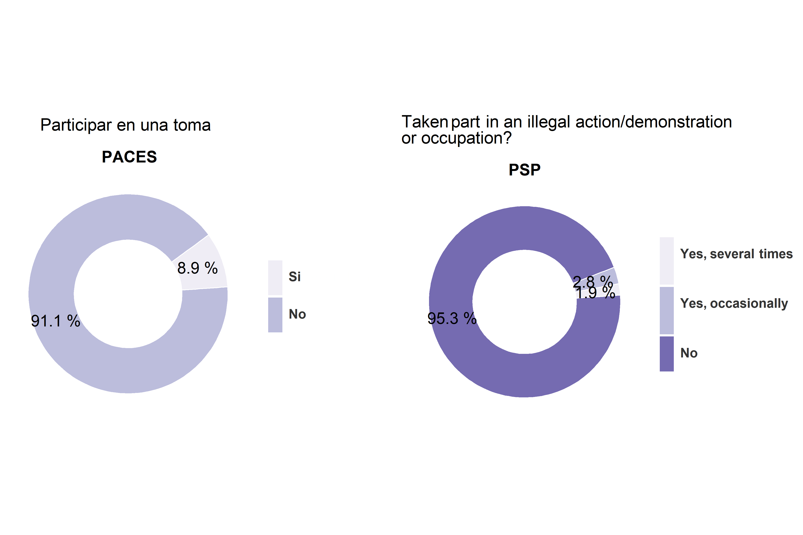

Ciudadania Juvenil Chile-Suecia
Resumen
Agradecimientos
1
Introducción
2
Suecia y Chile: Comparación entre una duradera democracia plena y una democracia con desempeño medio.
2.1
Parlamentarismo, presidencialismo y consecuencias del sistema politico
2.2
Historias politicas modernas de Chile y Suecia
2.3
Comparación democratica entre Chile y Suecia
2.4
Comparación historica de la calidad de la democracia
3
La democracia según los ciudadnos: comparación de la opinion publica de Chile y Suecia
4
Comparación de la vivencia democratica juvenil
4.0.1
Opinion sobre su democracia
4.1
Valores democraticos
4.1.1
Idea de un buen ciudadano
4.2
Participación
4.2.1
Participación en la escuela
5
Youth school political participation
5.1
Been a member of the student council?
5.2
Taken an active role at a students’ meeting?
5.3
Voted in a school election?
5.4
Participated in a protest at school?
5.4.1
Participación publica
6
Youth participation
6.1
Signed a petition?
6.2
Worked voluntarily for a good cause?
6.3
Taken part in a legal demonstration or strike?
6.4
Occupation
6.5
Ilegal strike
6.5.1
Socialización politica y discución ciudadana
7
Discussions with peers
7.1
Environmental issues
7.2
Facebook and contacts with others on the Internet
7.3
Politics or societal issues
8
Discussions with parents
8.1
What you have heard on the news about what is going on in ´country´ and around the world
8.2
Environmental issues
8.3
Politics or societal issues
9
10
ICCS
10.1
Practicas en la escuela
10.2
Actitud democratica
11
PACES-PSP
Bibliografía
Publicado con bookdown
Chile y Suecia
: Una comparación de los sistemas politicos y la ciudadania juvenil
6.4
Occupation
